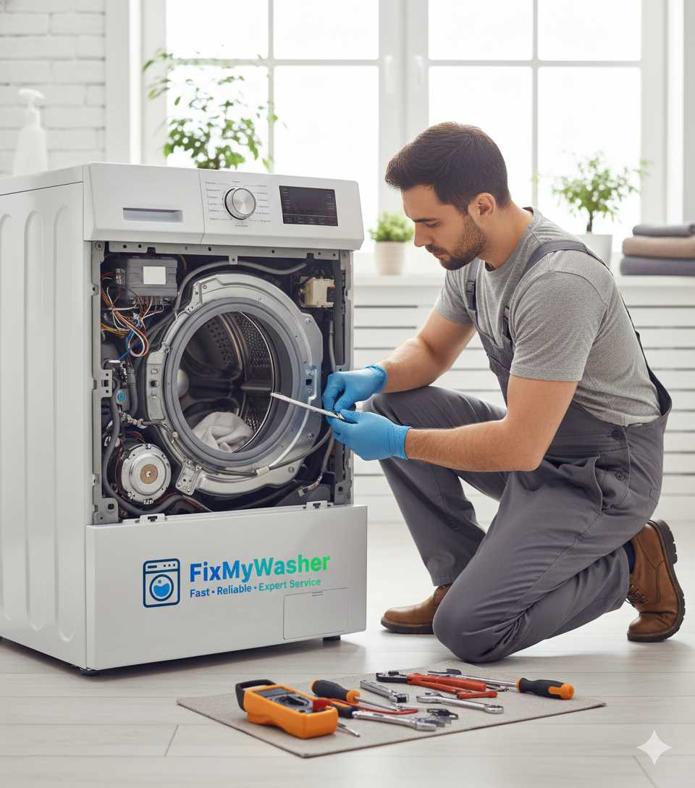
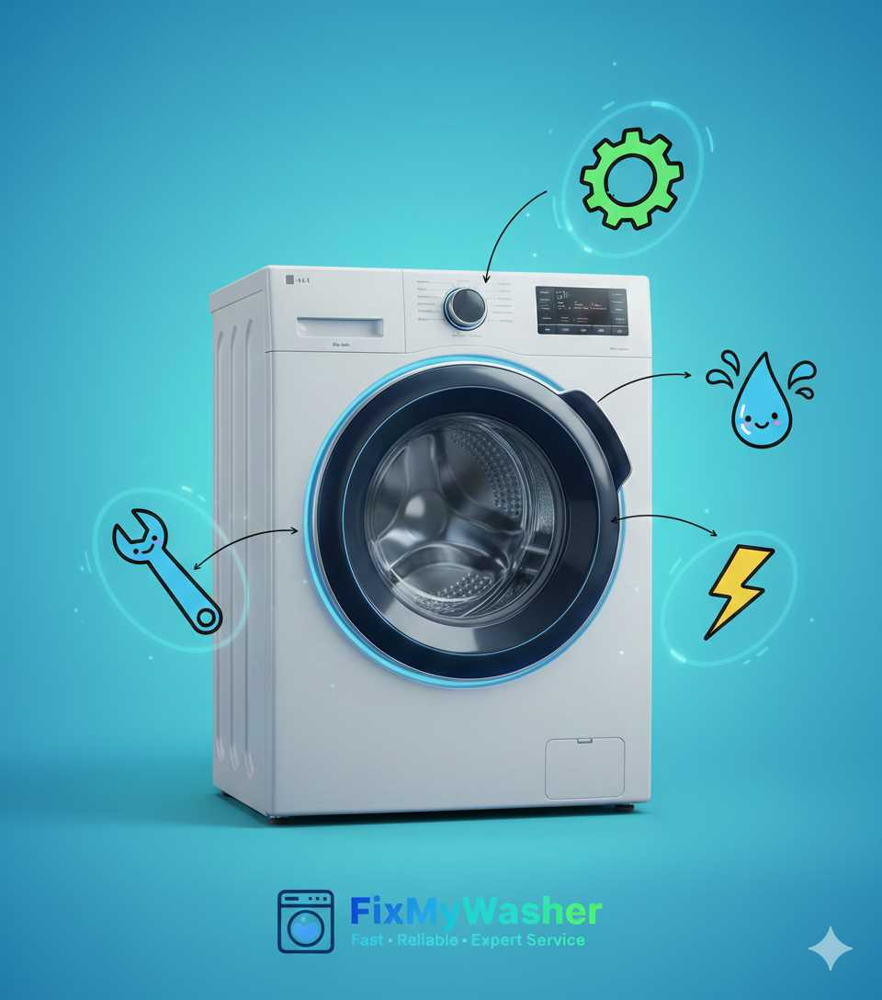

Samsung Washing Machine Repair in Bangalore — AddWash & EcoBubble Experts
Samsung's washing machines carry more genuinely unique hardware than almost any other brand we service, and it shows up directly in what breaks. The AddWash door — a small secondary opening built into the main door for adding forgotten items mid-cycle — exists nowhere else, and it comes with its own lock and seal that can fail independently of the main door. The VRT vibration reduction system uses steel balls suspended in fluid rather than conventional shock absorbers. EcoBubble continuously injects air into the wash rather than pre-treating with foam. FixMyWasher's technicians are trained specifically on these Samsung-only mechanisms, not just generic front-load repair.
.png)
Samsung AddWash Door Stuck or Machine Vibrating Badly?
Tell us the symptom on the phone and we'll bring the exact lock switch or VRT part.
Call 9164151568Common Samsung Faults We Diagnose and Fix
Samsung's unique hardware means unique failure points that most general technicians in Bangalore haven't specifically trained on. Here's what we see most often.

AddWash Door Fault
- Worn AddWash lock switch preventing the small door from confirming closed
- Misaligned latch after years of daily opening and closing
- Seal degradation causing a slow leak around the secondary door
- Because it must sync with the main door lock, even a minor fault can block the whole wash cycle
VRT Vibration Fault
- Fluid or ball displacement inside the VRT balancing ring
- Frequently misdiagnosed as a motor fault by non-specialist technicians
- Machine walks or bangs violently during spin when VRT isn't correcting properly
- A cheaper and more common fix than the motor replacement it's often mistaken for
EcoBubble Not Generating
- Air injector nozzle clogged with mineral sediment or detergent residue
- Air pump motor wear reducing bubble output over time
- Machine washes normally without it, so the fault often goes unnoticed for months
- Different failure mechanism from foam-based systems on other brands
Digital Inverter Motor Faults
- Bearing wear on the motor's drum-mounted design after years of heavy use
- PCB relay faults affecting motor speed control
- Less frequent than VRT or AddWash issues, but pricier to resolve
- Long motor warranty covers manufacturing defects, not general wear
AddWash: A Feature Only Samsung Has, and Its Own Failure Point
AddWash is genuinely unique hardware in the washing machine market: a small secondary door built into the main front-load door, letting you add a forgotten sock or delicate item mid-cycle without opening the main door and losing water and heat. It's a smart piece of engineering, but it also means Samsung front-load machines have an entire extra lock-and-seal system that no other brand's door design needs to account for. The AddWash door's lock must electronically confirm closed and coordinate with the main door's lock status before the control board allows the cycle to proceed — so a worn AddWash lock switch doesn't just leave a small door unusable, it can stop the entire machine from starting at all, which understandably confuses owners who assume the fault must be somewhere bigger. We check the AddWash lock switch as standard on any Samsung front-load call where the machine won't start, since it's a fast, inexpensive fix that's easy to overlook if you're not specifically looking for it.
VRT Ball-Balancing vs Traditional Shock Absorbers
Most washing machines control drum vibration with spring-loaded shock absorbers that physically dampen movement after it happens. Samsung's VRT (Vibration Reduction Technology) takes a different mechanical approach: steel balls suspended in fluid-filled rings mounted around the drum shift position in real time to counterbalance uneven loads as they occur, rather than just absorbing the resulting shake. It's a genuinely different engineering philosophy from LG's Direct Drive motor design or Bosch's shock-absorber system, and it produces a distinct failure mode too — when the fluid leaks or the balls settle unevenly, the drum loses its active counterbalancing and behaves as if there's no vibration control at all, even though the motor and shock absorbers underneath are perfectly healthy.
| Aspect | Samsung VRT | Traditional Shock Absorbers |
|---|---|---|
| Mechanism | Fluid-filled ball rings around drum | Spring-loaded dampers |
| How it corrects imbalance | Active real-time counterbalancing | Passive shock absorption |
| Typical failure mode | Fluid leak or ball displacement | Worn spring, reduced dampening |
| Common misdiagnosis | Mistaken for motor fault | Usually correctly identified |
| Repair cost | Moderate, ring-specific part | Generally lower, standard part |
Samsung Model Range We Service
Samsung's Bangalore lineup mixes flagship-feature front-load machines with simpler top-load units, and the repair profile changes significantly between them.

Premium Front Load (AddWash + EcoBubble)
- Full feature set: Digital Inverter motor, VRT, AddWash, EcoBubble combined
- Most complex Samsung platform to diagnose, most calls originate here
- Highest repair value machines given the feature investment
Standard Front Load
- Digital Inverter motor and VRT included, without AddWash or EcoBubble
- Simpler diagnosis than the premium tier, fewer unique failure points
- Door seal and drain pump are the most common calls
Fully Automatic Top Load
- Digital Inverter motor fitted on most models, VRT less commonly included
- Simpler overall layout, generally faster to repair than front load
- Water level sensor faults are the most frequent call here
Older Samsung Models (6+ Years)
- VRT fluid ring degradation becomes more common at this age
- Motor bearing wear typically appears around the same timeframe
- Genuine Samsung parts remain widely available through our supplier network
Why Bangalore's Hard Water Targets VRT Rings and EcoBubble Injectors Specifically
Samsung's unique hardware creates unique hard-water vulnerabilities that don't exist on simpler machines. The EcoBubble air injector's fine nozzle is a natural collection point for mineral sediment carried in Bangalore's borewell water, and once it partially clogs, bubble output drops gradually rather than stopping outright, so the fault often goes unnoticed for months. The VRT balancing ring, while sealed, isn't entirely immune either — the fluid chamber's seal can degrade faster in areas with harder water where the surrounding components experience more general mineral stress. We see both patterns most in Koramangala, HSR Layout and Sarjapur Road, where premium Samsung front-load ownership is highest and borewell dependency compounds the effect.
What You Can Check Yourself Before Calling Us
A few checks are worth doing before booking a Samsung repair visit. If the machine won't start at all on an AddWash model, check that the small AddWash door is fully closed and latched, not just the main door — this alone resolves a meaningful share of "won't start" calls. If you notice violent vibration during spin, try reducing the load size and running an empty test cycle before assuming a major fault, since genuine overloading can also strain a healthy VRT system temporarily.
What we don't recommend attempting yourself: opening the VRT balancing ring, which is a sealed fluid unit that can't be safely resealed without proper equipment, or accessing the EcoBubble air injector, which sits in a tightly packed area near the detergent drawer and is easy to damage during DIY disassembly. Both are quick, affordable jobs for a technician with the right parts on hand.
Samsung Installation, Uninstallation & Relocation
Samsung's front-load machines, particularly premium models with VRT, benefit significantly from precise levelling since the balancing system works best when the drum starts from a genuinely stable base. Our installation includes careful levelling, transit bolt removal, and inlet/outlet hose connection with a full leak test. For relocations, we take extra care with the AddWash door mechanism during transit, since its additional moving parts are more sensitive to impact than a standard single-door design.
Transit bolt removal & precision levelling
Inlet/outlet hose connection & leak testing
AddWash mechanism protection during transit
Electrical socket & earthing check
Safe relocation for house moves
First-wash test cycle before we leave
Is Your Samsung Fault Urgent, or Can It Wait?
A quick guide to help you decide whether to call today or schedule for later.
Call Us Today
- Water leaking from the base or AddWash door
- Violent banging or walking movement during spin
- Machine trips the socket or house breaker
- Neither the main nor AddWash door will unlock with laundry inside
Can Be Scheduled
- EcoBubble no longer visibly producing bubbles
- Minor vibration that hasn't gotten worse
- AddWash door slightly stiff but still functional
- Slightly slower fill or spin than usual
How Samsung Repair Works With Us
Book & Dispatch
Tell us the model and symptom on the phone; a technician is assigned same day.
On-Site Diagnosis
Free inspection including AddWash lock and VRT check, with a written quote.
Genuine Parts Repair
Only genuine or OEM-equivalent Samsung parts fitted — lock switches, VRT rings, motors, injectors.
Test & Warranty
Full wash cycle test before we leave, plus a 90-day warranty on parts and labour.
Samsung Repair Estimated Pricing
| Service | Estimated Range |
|---|---|
| Doorstep inspection & diagnosis | Free |
| EcoBubble injector cleaning / replacement | ₹400 – ₹900 |
| AddWash lock switch replacement | ₹1,100 – ₹1,800 |
| VRT balancing ring repair | ₹2,000 – ₹3,200 |
| Digital Inverter motor replacement | ₹3,600 – ₹5,000 |
VRT and motor repairs cost more due to their specialised design, but correct diagnosis often avoids an unnecessary motor replacement altogether. Exact cost depends on model and part availability, always confirmed in writing before repair begins.
Why Bangalore Trusts Us With Samsung Machines
AddWash Trained
Familiar with the secondary door's lock and seal system, not just the main door
Same-Day Visit
Book before 2 PM for same-day service across Bangalore
90-Day Warranty
On both parts and labour for every Samsung repair we complete
Correct VRT Diagnosis
We check the balancing ring before assuming a costly motor fault
Recent Samsung Repairs in Bangalore
Farah S., Koramangala
"Our Samsung AddWash's small door wouldn't lock, blocking the whole wash cycle. Technician replaced the AddWash lock switch in one visit."
Vikram A., HSR Layout
"Machine was shaking violently during spin. Technician explained it was the VRT balancing ring, not the motor, and fixed it without a costly motor swap."
We Also Repair These Brands in Bangalore
Related Services
Samsung Repair Coverage Across Bangalore
Samsung's premium front-load range, particularly AddWash and EcoBubble models, has a strong presence in Bangalore's higher-income tech corridors, and our technician coverage reflects that concentration. Koramangala, HSR Layout and Indiranagar — areas with high premium-appliance ownership — account for the majority of our AddWash and VRT service calls, where owners specifically chose Samsung for these feature sets. Whitefield, Marathahalli and Sarjapur Road show a broader mix of premium and standard Samsung models, reflecting the area's blend of established households and newer IT-corridor residents. We maintain genuine Samsung parts stock across all these zones specifically because the brand's unique hardware means substitute parts simply don't exist for components like the AddWash lock or VRT ring.
.png)
Extending Your Samsung Machine's Life Between Services
A few habits noticeably reduce how often a Samsung machine needs a repair call. If you have AddWash, avoid slamming the small door shut and check periodically that it seals flush against the main door, since even minor misalignment accelerates lock switch wear. Never force the door if it feels stiff to close — investigate rather than push through resistance, since that's usually the earliest sign of a lock developing a fault. Avoid overloading the drum beyond rated capacity, since excess weight stresses the VRT balancing system beyond what it's designed to correct for. Run the machine's tub-clean cycle monthly, and if you have EcoBubble, an occasional hot rinse cycle helps keep the air injector nozzle clear. If you're in a hard-water area like Koramangala or Sarjapur Road, ask your technician to check the EcoBubble injector during any unrelated service visit, since early clogging is invisible until bubble output has already dropped significantly.
Samsung Washing Machine Repair FAQs
Why won't my Samsung AddWash small door lock?
This is usually a worn AddWash lock switch or a misaligned latch mechanism. Because the small door must coordinate its lock status with the main door before a wash cycle can run, even a minor AddWash fault can block the entire machine from starting.
Why does my Samsung washing machine vibrate violently during spin?
This is very often the VRT (Vibration Reduction Technology) balancing ring rather than the motor. VRT uses steel balls suspended in fluid-filled rings around the drum to counterbalance uneven loads, and if the fluid or balls shift out of position, the system stops correcting for imbalance the way it's designed to.
What causes EcoBubble to stop producing bubbles?
EcoBubble uses a small air injector and pump to continuously mix air into the detergent solution during wash. Mineral sediment from hard water or dried detergent residue can clog the injector nozzle, stopping bubble production even though the machine washes normally otherwise.
Do you use genuine Samsung spare parts?
Yes, every repair uses genuine or OEM-equivalent Samsung parts including Digital Inverter motors, VRT balancing rings, AddWash lock switches and EcoBubble injectors, backed by a 90-day warranty.
How fast can a technician reach me in Bangalore for Samsung repair?
Typically within 90 minutes across Bangalore, including Koramangala, HSR Layout, Indiranagar, Whitefield and Marathahalli.
Is a VRT ring repair cheaper than a motor replacement?
Yes, significantly. Vibration symptoms are frequently misdiagnosed as a motor fault when the VRT balancing ring is the actual cause, and correctly identifying this saves a substantial amount compared to an unnecessary motor swap.
Do you install new Samsung washing machines?
Yes, we offer full installation including transit bolt removal, precision levelling important for VRT performance, hose connection, and a first-wash test cycle.
Get Your Samsung Washing Machine Fixed Today
Correct diagnosis, genuine parts, and a 90-day warranty — on every Samsung repair across Bangalore.